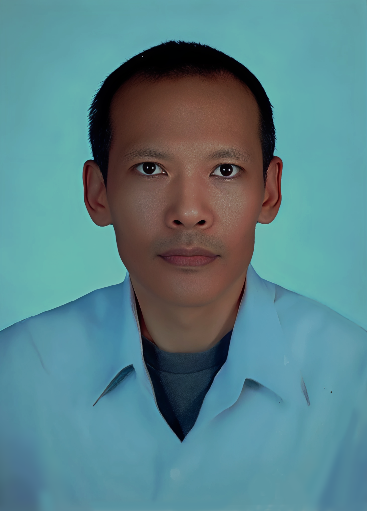

.png)
.png)
.png)
.png)
ที่อยู่ปัจจุบัน
77/49 หมู่ 4, ทีระวรรณอพาร์ทเมนต์
ถ.ติวานนท์ 7 ต.ตลาดขวัญ อ.เมือง จ.นนทบุรี 11000
ผลงาน
ไชโย แสงใส
การศึกษา
วุฒิการศึกษาระดับมัธยมศึกษาตอนปลาย
ศูนย์การศึกษานอกระบบและการศึกษาตามอัธยาศัย จ.อุบลราชธานี (2541)
ประสบการณ์ทำงาน
- Craft Estate – เชฟ เดอ ปาร์ตี
• ระยะเวลา: 5 ต.ค. 2566 – 31 ต.ค. 2567 (1 ปี)
• หน้าที่: ตรวจสอบคุณภาพอาหาร, เตรียมวัตถุดิบ, สนับสนุนทีมในครัว - Bulwark – เชฟ เดอ ปาร์ตี
• ระยะเวลา: 2 พ.ย. 2564 – 30 ก.ย. 2566 (1 ปี 10 เดือน)
• หน้าที่: ดูแลทั่วไปในครัว, จัดการวัตถุดิบและสต็อก - The Salares Coffee Bar – เชฟ เดอ ปาร์ตี
• ระยะเวลา: 1 มี.ค. 2563 – 30 ก.ย. 2564 (1 ปี 6 เดือน)
• หน้าที่: อาหารยุโรป, เตรียมอาหารตามมาตรฐาน - Bistro de Flora – เชฟ เดอ ปาร์ตี
• ระยะเวลา: 1 ก.ค. 2560 – 31 ธ.ค. 2562 (2 ปี 6 เดือน)
• หน้าที่: อาหารอิตาเลียน, เตรียมซอส, ตกแต่งจาน, ประสานงานทีม - Farm Rakdee – หัวหน้าเชฟ
• ระยะเวลา: 6 ก.พ. 2558 – 31 พ.ค. 2560 (2 ปี 3 เดือน)
• หน้าที่: วางแผนเมนู, ควบคุมต้นทุน, บริหารจัดการทีมทั้งหมด
ทักษะ
- บริหารจัดการทีมครัว
- ทำงานภายใต้แรงกดดัน
- แก้ปัญหาเฉพาะหน้า
- ใช้อุปกรณ์ครัวเฉพาะทาง (เช่น ซูวีด, เครื่องซีลสูญญากาศ)
ทักษะเพิ่มเติม
- Microsoft Excel / การคำนวณต้นทุน
- การสร้างสูตรอาหารมาตรฐาน
- ภาษา
- ภาษาไทย
- ภาษาอังกฤษ
งานอดิเรก
- ทดลองสูตรอาหารใหม่ ๆ
- อ่านเรื่องวัตถุดิบ